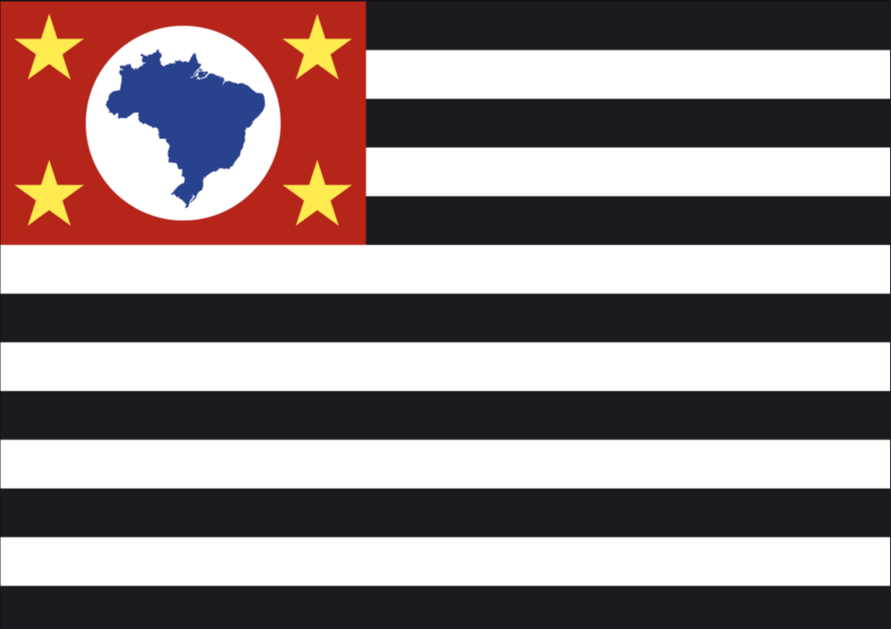
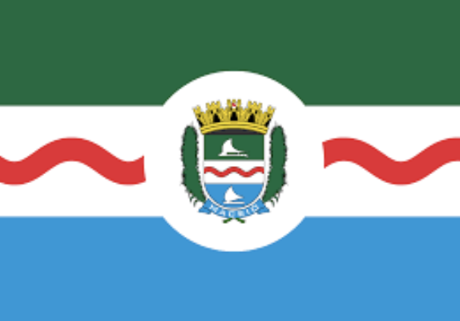

Estados e algumas capitais
Rio Branco

Rio Branco: É a capital do estado do Acre (AC).
Área territorial: 8.835km²
População: 350mil habitantes.
Curiosidade: de “Capital da Natureza”, em razão dos seus atributos naturais.
São Paulo

São Paulo: Capital do estado de São Paulo
Área territorial: 1.521 km²
População: 12 milhões de habitantes
Curiosidade: maior cidade do país é considerada uma metrópole mundial brasileira.
Maceió

Maceió: Capital do estado de Alagoas
Área territorial: 509,6 km²
População: 1.012.387 habitantes
Curiosidade: Muito procurada pelos turistas nos meses de verão, centro financeiro, social e cultural de Alagoas.
Macapá

Macapá: Capital do estado do Amapá
Área territorial: 6.407 km²
População: 493.634 habitantes
Curiosidade: A única que não faz ligação com outras capitais por meio de rodovias.
Manaus
Manaus: Capital do estado do Amazonas
Área territorial: 11.401 km²
População: 2 milhões de habitantes
Curiosidade: situada no centro da Floresta Amazônica.
Salvador

Salvador: Capital do estado do Amazonas
Área territorial: 693,8km²
População: 2,7 milhões de habitantes
Curiosidade: Foi a primeira capital do Brasil.